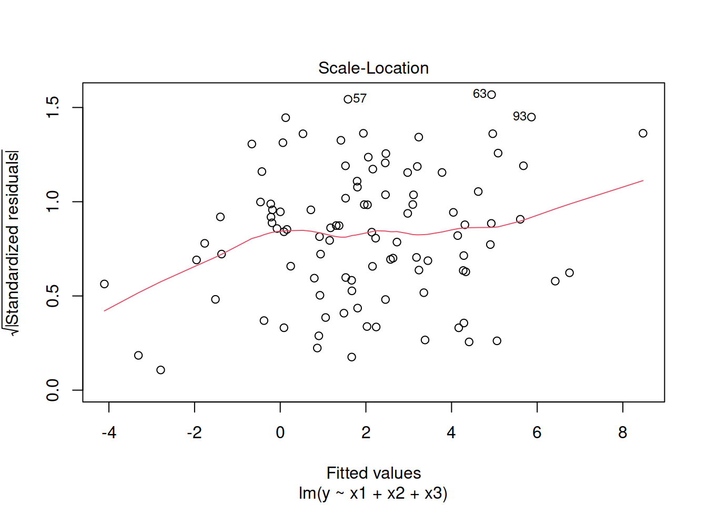

I will fake some data to work with according to the following equation.
\[ y = 2 + 2*x_{1} + 1*x_{2} -1*x_{3} + \epsilon \] where each x and \(\epsilon\) are random draws from a standard normal distribution with mean zero and standard deviation 1.
x1 <- rnorm(100); x2 <- rnorm(100); x3 <- rnorm(100); e <- rnorm(100)
y <- 2 + 2*x1 + x2 - x3 + e
My.data <- data.frame(y, x1, x2, x3)
head(My.data)
save(My.data, file="MyData.RData")load(url("https://github.com/robertwwalker/DADMStuff/raw/master/MyData.RData"))It all starts with lm().
Let’s estimate a regression with y taken as a function of an intercept, a slope for each of x1, x2, and x3, and residual given the aforementioned. I will estimate
\[ y = \alpha + \beta_1 x_1 + \beta_2 x_2 + beta_3 x_3 + \epsilon \]
( My.Regression <- lm(y ~ x1+x2+x3, data=My.data) )##
## Call:
## lm(formula = y ~ x1 + x2 + x3, data = My.data)
##
## Coefficients:
## (Intercept) x1 x2 x3
## 2.0491 2.0687 0.8762 -0.8639The core details of a fitted regression can be gleaned from a summary().
summary(My.Regression)##
## Call:
## lm(formula = y ~ x1 + x2 + x3, data = My.data)
##
## Residuals:
## Min 1Q Median 3Q Max
## -2.22834 -0.62924 -0.03868 0.67298 2.27252
##
## Coefficients:
## Estimate Std. Error t value Pr(>|t|)
## (Intercept) 2.04909 0.09446 21.693 < 2e-16 ***
## x1 2.06873 0.10339 20.009 < 2e-16 ***
## x2 0.87619 0.09608 9.120 1.16e-14 ***
## x3 -0.86387 0.09204 -9.386 3.11e-15 ***
## ---
## Signif. codes: 0 '***' 0.001 '**' 0.01 '*' 0.05 '.' 0.1 ' ' 1
##
## Residual standard error: 0.9412 on 96 degrees of freedom
## Multiple R-squared: 0.8536, Adjusted R-squared: 0.8491
## F-statistic: 186.6 on 3 and 96 DF, p-value: < 2.2e-16The top line gives a summary() of the residuals. Then we get the parameters – the slope(s) and intercept – and their standard errors along with a t and a two-sided probability that the particular slope or intercept is zero. In this instance, the parameters are close[ish] to their true values. The residual standard error on 100 - 1 - 3 slopes = 96 degrees of freedom is 0.94 – almost 1, the true value. These three factors account for 85.36% of the variation. Each has a slope with a t-statistic that is clearly different from zero [at least 9 standard errors away from zero]. At the bottom, the F statistic examines the claim that the set of included predictors [all 3 of them] explain no more than random variation against the alternative that at least of the predictors has a non-zero slope (is related to y). The p-value is the probability that each of the included predictors explain no more than random variation. If it is very low, then the predictors account for significant variation in y.
To obtain the confidence intervals for the slopes and the intercept, we embed our linear model in confint().
confint(My.Regression)## 2.5 % 97.5 %
## (Intercept) 1.8615867 2.2365868
## x1 1.8635022 2.2739616
## x2 0.6854841 1.0669012
## x3 -1.0465660 -0.6811651With 95% confidence, the intercept is between 1.86 and 2.24; the slope linking x1 and y ranges from 1.86 to 2.27. The slope linking x2 and y ranges from 0.69 to 1.07 and the slope linking x3 to y ranges from -1.05 to -0.68. All include the true values in the interval.
anova() applied to a single regression gives a sequential accounting of the sums of squares.
anova(My.Regression)## Analysis of Variance Table
##
## Response: y
## Df Sum Sq Mean Sq F value Pr(>F)
## x1 1 338.64 338.64 382.241 < 2.2e-16 ***
## x2 1 79.38 79.38 89.604 2.089e-15 ***
## x3 1 78.04 78.04 88.090 3.109e-15 ***
## Residuals 96 85.05 0.89
## ---
## Signif. codes: 0 '***' 0.001 '**' 0.01 '*' 0.05 '.' 0.1 ' ' 1x1 accounts for 4 times the variation of x2 and x3. On 1 and 96 degrees of freedom, 99% of F values would be below 6.9064673. These are all clearly higher.
If we wish to compare two regressions using anova, it will show the sums of squares for the two models. Let me eliminate x3 and see what happens. We know from the above table that x3 accounts for 78.04 squares, that should be the difference between these two models. They should not be equivalent because x3 is important.
( My.Regression.2 <- lm(y ~ x1+x2, data=My.data) )##
## Call:
## lm(formula = y ~ x1 + x2, data = My.data)
##
## Coefficients:
## (Intercept) x1 x2
## 2.0755 2.0286 0.9088anova(My.Regression.2, My.Regression)## Analysis of Variance Table
##
## Model 1: y ~ x1 + x2
## Model 2: y ~ x1 + x2 + x3
## Res.Df RSS Df Sum of Sq F Pr(>F)
## 1 97 163.09
## 2 96 85.05 1 78.042 88.09 3.109e-15 ***
## ---
## Signif. codes: 0 '***' 0.001 '**' 0.01 '*' 0.05 '.' 0.1 ' ' 1It shows. We reject the claim that the two models are equivalent – explain the same variance. Here, the first does considerably worser than the second. The one degree of freedom for x3 is responsible for 88 times the average residual and 6.91 is the threshhold with 99% probability.
To obtain the residuals from a regression model, we can use the residuals(lm) function.
My.data$residuals <- residuals(My.Regression)To obtain the algebraic prediction, we can ask for the fitted values.
My.data$fitted.values <- fitted.values(My.Regression)Let me show the data, now.
My.data %>% head() %>% kable()| y | x1 | x2 | x3 | residuals | fitted.values |
|---|---|---|---|---|---|
| 0.4854983 | -0.8887555 | 0.3099350 | -0.8027193 | -0.6899960 | 1.1754943 |
| 1.9829614 | -0.7149266 | 0.9495822 | -0.4682931 | 0.1763069 | 1.8066545 |
| 3.9189824 | 0.5196613 | -1.4247387 | -0.6839269 | 1.4523804 | 2.4666020 |
| 1.7440977 | -0.2439637 | 0.0918838 | 0.5452104 | 0.5901870 | 1.1539107 |
| -2.3874190 | -0.6649309 | -2.0671758 | 0.9448249 | -0.4334962 | -1.9539228 |
| 0.6922076 | 0.1700020 | -0.9864477 | 0.7048787 | -0.2353291 | 0.9275367 |
The predict function can arrive at two intervals.
First, we could predict the mean’s confidence interval given some value of the inputs, x1, x2, and x3. Let’s set each to 1.
Pred.Data <- data.frame(x1=1, x2=1, x3=1)
predict(My.Regression, newdata = Pred.Data, interval = "confidence")## fit lwr upr
## 1 4.130146 3.742922 4.51737If we plug in the values for x1, x2, and x3 we would obtain a predicted value of 4.130146; the 95% interval for the average ranges from 3.743 to 4.517 given x1=1, x2=1, x3=1. Now let us predict the range of the data.
predict(My.Regression, newdata=Pred.Data, interval = "prediction")## fit lwr upr
## 1 4.130146 2.222094 6.038198GIven x1=1, x2=1, x3=1, the range of y, with 95% confidence, is 2.22 to 6.04.
The plot of the linear model gives a few fit assessment graphics.
plot(My.Regression)
The quantile-quantile plot can be applied to the residuals, as well.
shapiro.test(My.data$residuals)##
## Shapiro-Wilk normality test
##
## data: My.data$residuals
## W = 0.99469, p-value = 0.9662car::qqPlot(My.data$residuals)## [1] 63 57The fitted.values and the original data in a plot can also be used to assess this.
ggplot(My.data, aes(x=fitted.values, y=y)) + geom_point() + geom_abline(slope=1, intercept = 0) + labs(x="Predicted Values", y="Actual Values")The effects plot are useful for assessing the functional form – line or nonline. This is the one part of this that relies on an outside library.
library(effects)## Loading required package: carData## Registered S3 methods overwritten by 'lme4':
## method from
## cooks.distance.influence.merMod car
## influence.merMod car
## dfbeta.influence.merMod car
## dfbetas.influence.merMod car## lattice theme set by effectsTheme()
## See ?effectsTheme for details.plot(allEffects(My.Regression, partial.residuals=TRUE))